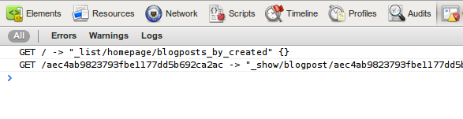

Getting started
Installation
Install the most recent stable version of node, then clone kanso from GitHub. Fetch the relevant submodules by doing the following in the cloned directory:
git submodule init git submodule update
You are then ready to install:
make && sudo make install
Using NPM
If you already have node.js installed, and you're using npm (Node Package Manager), then you can install by simply doing the following:
npm install kanso
Starting a project
For this tutorial we'll be making a fairly typical blog, with posts, comments and users. Some familiarity with CouchDB is expected, but I'll try to explain the concepts as we go.
To create a new project skeleton, enter the following command:
kanso create myblog
This creates a number of files and directories representing a basic project structure. We'll look more closely at the generated files later, but for a brief overview, the directories fall into the following categories:
myblog
|- lib CommonJS modules which define your app
|- static Static files such as jQuery and CSS
|- templates HTML templates used by the app
|- kanso.json Project configuration
This structure is a merely a guide and you are free to place files wherever it makes sense, provided you update the configuration settings in kanso.json.
Deployment
It might seem early in the tutorial to start talking about deployment, but since your app needs to be hosted by CouchDB to run, we're going to cover it now.
The first thing to mention is that Kanso apps are just CouchApps. This means they can be hosted directly from your CouchDB instance, without any additional tier or services.
For the rest of this tutorial we're going to assume you have CouchDB running on http://localhost:5984 (the default settings). If you haven't got a local copy of CouchDB running, go do that now.
Pushing
The push command uploads your app to a CouchDB database. You can find help
on any of the commands used in this tutorial by typing kanso help.
Let's push the new project to your CouchDB instance, and check that everthing works. To do this, enter the following command from your project directory:
kanso push http://localhost:5984/myblog

This creates a new database called 'myblog' and uploads your app to it. If you now visit http://localhost:5984/myblog/_design/myblog/_rewrite/, you should see the following welcome page:

This is the location to use when testing your app. Don't worry about the ugly URL, we can fix this later using virtual hosts.
Describing the data
Now we've got our new project up and running, let's think about the data structures this project requires. Because CouchDB is schemaless, we can make lots of changes as we go without having to worry about doing ALTER TABLE.
The only problem is, it can quickly get complicated when manually validating documents and checking permissions. Thankfully, kanso provides a powerful document validation and permissions tool in the form of Type definitions.
Creating types
In the skeleton project we created earlier, there's a file called
lib/types.js. This is the conventional place to export types.
Remember, the files in the lib directory are
CommonJS modules.
This means anything added to the exports object in this file is
made visible to other modules.
Let's create a type for describing blog posts. Add the following to
lib/types.js.
var Type = require('kanso/types').Type,
fields = require('kanso/fields'),
widgets = require('kanso/widgets');
exports.blogpost = new Type('blogpost', {
fields: {
created: fields.timestamp(),
title: fields.string(),
text: fields.string({
widget: widgets.textarea({cols: 40, rows: 10})
})
}
});
That should be fairly self-explanatory.
The first argument to the Type constructor is the type name
which must be unique, the second argument is an object describing fields
and other options.
Now we've added a basic type, let's push these changes to the server:
The Admin App
As a useful way to play with data types, kanso provides a basic admin app. You can push this app to the same database you pushed the 'myblog' project to by using the following command:
kanso pushadmin http://localhost:5984/myblog

If you now visit http://localhost:5984/myblog/_design/admin/_rewrite/ you should see the following page:

Because you can have multiple apps running on a single database you will be presented with a list of available applications. Click the 'myblog' app.

Here, we are presented with a list of types. Currently, we just have the one 'blogpost' type. Clicking on this will show you a list of existing blog posts:

Of course, we haven't added any yet. Let's try adding one now. Click the 'Add blogpost' link.

As you can see, the admin app has read the field settings we defined earlier
and presented us with a sensible form for adding blog posts. You'll notice the
timestamp field is missing. This is because it's automatically
populated with the current time.
Create a blog post by filling out the form with some test data and clicking the create button.

As you can see, kanso has automatically populated the 'type' and 'created' fields. The 'type' field is automatically added, and reserved for use by kanso so we can identify the definition to validate against.
Querying the data
In CouchDB, you query your documents using map / reduce functions called 'views'. If you've never written a CouchDB view before, you can read up on it in the Definitive Guide.
Adding a view to a kanso app couldn't be simpler. Just open up the
lib/views.js file and add the following example view:
exports.blogposts_by_created = {
map: function (doc) {
if (doc.type === 'blogpost') {
emit(doc.created, doc.title);
}
}
};Push the app, then revisit the admin interface at http://localhost:5984/myblog/_design/admin/_rewrite/myblog you'll see the view we created now appears:

Clicking on the view shows the current results. You should see the document we created earlier keyed by its created at timestamp:

Clicking on a row will take you to its corresponding document.
Rendering pages
In CouchDB, rendering custom representations of your data is achieved using List and Show functions. Kanso is no different, although it will also run these functions client-side wherever possible, giving users a more responsive interface while also providing a fallback for search-engines.
Writing code in this way can be very efficient and shows where you might be missing non-js support. However, at first it might seem a little odd. Work through the examples and bear in mind that all list and show functions could be run client-side or server-side at any time!
List functions
List functions format the results of a view. We're going to use a list
function to show a list of blog posts on the homepage, ordered by the
date they were created. Add the following to lib/lists.js:
var templates = require('kanso/templates');
exports.homepage = function (head, req) {
start({code: 200, headers: {'Content-Type': 'text/html'}});
// fetch all the rows
var row, rows = [];
while (row = getRow()) {
rows.push(row);
}
// generate the markup for a list of blog posts
var content = templates.render('blogposts.html', req, {
rows: rows
});
if (req.client) {
// being run client-side, update the current page
$('#content').html(content);
document.title = 'MyBlog';
}
else {
// being run server-side, return a complete rendered page
return templates.render('base.html', req, {
content: content,
title: 'MyBlog'
});
}
};For simplicity, we're pre-fetching all the rows at once, on large views you'll want to return content for each row before fetching the next.
You'll notice this list function detects if its running client-side by checking the client property on the request object. When run client-side, it will update the DOM instead of returning a new HTML document.
We also reference two templates: 'base.html' and 'blogposts.html'. The first
was created as part of the project skeleton, but the second we need to create
ourselves. Create a new template at templates/blogposts.html with
the following content:
<h1>My Blog</h1>
{?rows}
<ul>
{#rows}
<li>{value}</li>
<li><a href="{baseURL}/{id}">{value}</a></li>
{/rows}
</ul>
{:else}
<p>No blog posts</p>
{/rows}For more information on the template format used by kanso, see the Dust website. Basically, this will render a list of blog post titles.
One thing worth noting is the use of {baseURL} in the template. This variable is automatically made available to templates by kanso, and refers to the current 'root' level URL. That would currently mean '/myblog/_design/myblog/_rewrite', but that may change if you use a virtual host in the future. For now, be sure to prefix all application URLs with the base URL.
Rewrites
Next, we need to hook this view up to a URL. CouchDB uses
rewrites
to point arbitrary URLs at CouchDB functions and again, kanso is no exception.
Let's change the root URL from the welcome page to our new list of blog posts.
Edit lib/rewrites.js to look like the following:
module.exports = [
{from: '/static/*', to: 'static/*'},
{from: '/', to: '_list/homepage/blogposts_by_created'}
];This uses our new list function in combination with the view query we created earlier. Push the app, then open it in your browser: http://localhost:5984/myblog/_design/myblog/_rewrite/.

Of course, clicking on the blog post will give a 404 Not Found error, since we've not implemented the view for a single blog post yet. Let's do that now.
Show functions
Show functions are like list functions, only they display a single document
rather than the results of a view. We're going to create a show function
for our blog posts, open up lib/shows.js and take a look.
Currently, it will contain the welcome page we recently unhooked from our
rewrite rules. You can now remove that, and replace it with the following:
var templates = require('kanso/templates');
exports.blogpost = function (doc, req) {
// render the markup for a single blog post
var content = templates.render('blogpost.html', req, doc);
if (req.client) {
// being run client-side
$('#content').html(content);
document.title = doc.title;
}
else {
return templates.render('base.html', req, {
content: content,
title: doc.title
});
}
};
Then we need to add the blogpost.html template:
<h1>{title}</h1>
<p>{text}</p>And update the rewrite rules:
module.exports = [
{from: '/static/*', to: 'static/*'},
{from: '/', to: '_list/homepage/blogposts_by_created'},
{from: '/:id', to: '_show/blogpost/:id'}
];Push the app and try clicking the blog post link now. You should see a page similar to the following:

If you check your JavaScript console in Chrome or Firebug, you should notice that clicking on the blog post link on the homepage causes the next request to be handled client-side:
However, turning off JavaScript should provide you with the same experience. Just with your CouchDB server doing the work of rending pages.
As your sites become more complex you may want to make additional requests to the server when a list or show function is run client-side. This means we could show all blogposts with the same tag in a side-bar, or perhaps show links to related posts. These features would then be available only to people with JavaScript turned on, and browsers without JavaScript will fall-back to the core content you see now.